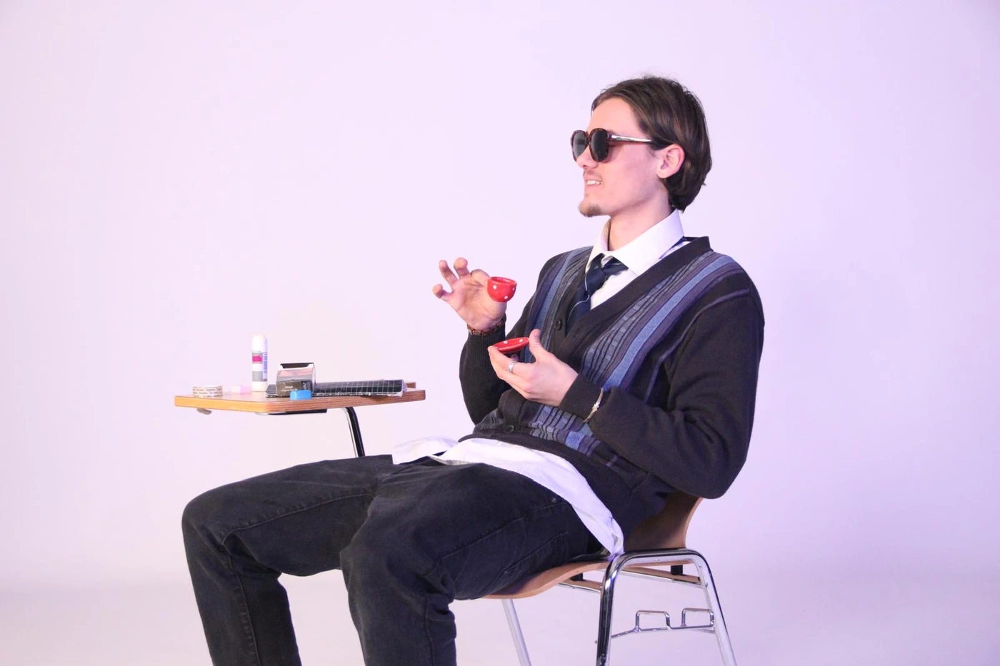
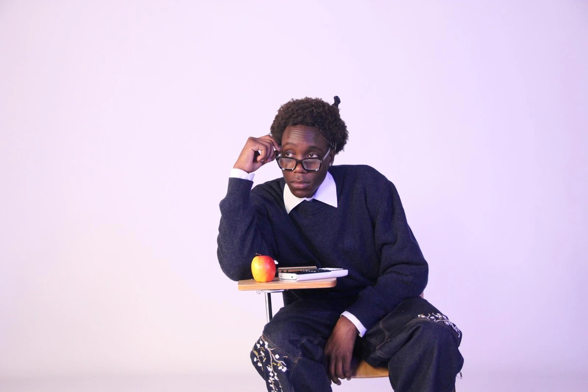
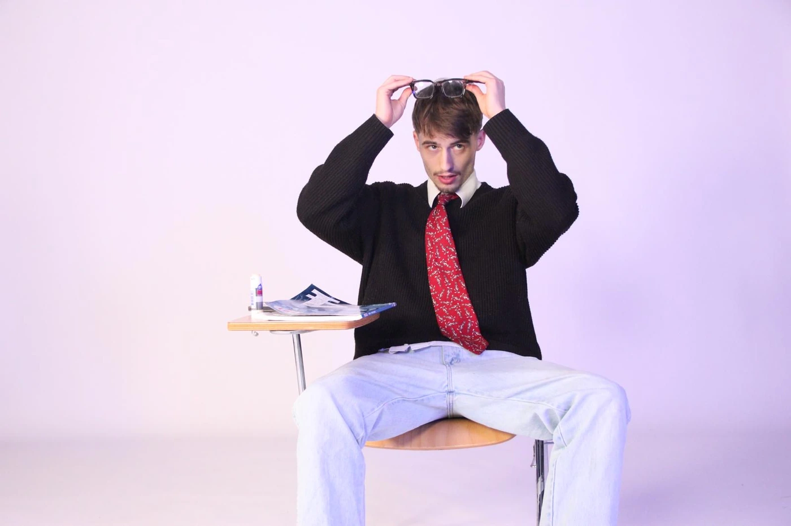
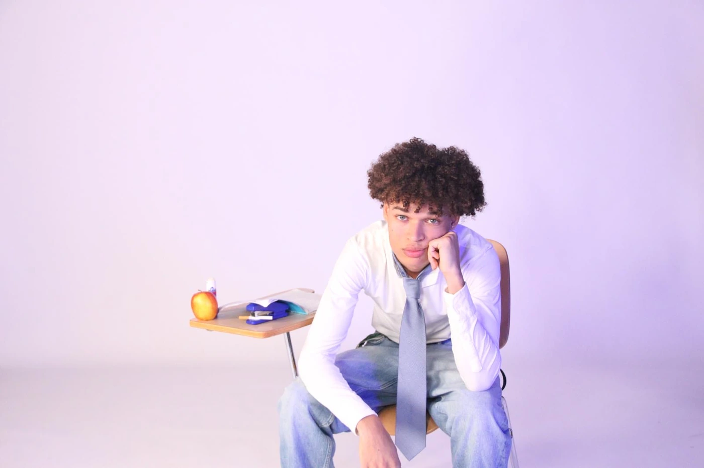

Adelin
RAPPersoonlijk stukje volgt later.

Snaapse Lik is een vierkoppige groep bestaande uit Mogli, Adelin, Forward en WZRD. Ontstaan op de Rockacademie en doorgegroeid tot een live-act met een eigen energie, humor en groepsdynamiek.
In de muziek van Snaapse Lik komen hiphop, funk, pop en boombap samen.

Persoonlijk stukje volgt later.

Persoonlijk stukje volgt later.

Persoonlijk stukje volgt later.

Persoonlijk stukje volgt later.